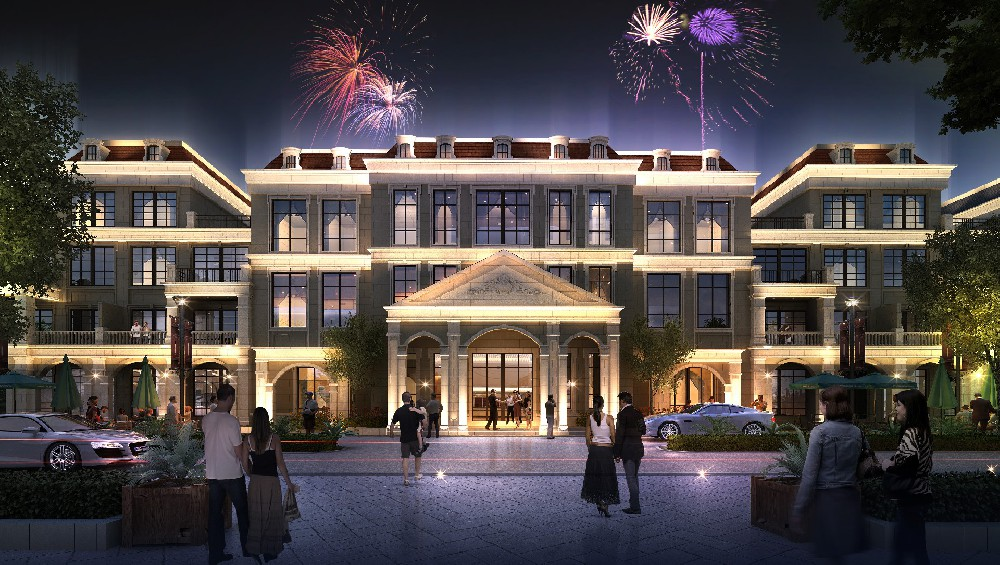

项目介绍
项目位置： 涵宇.太阳岛碧水庄园项目位于青田县山口镇雅陈村朱地，北临优质生态溪流四都港，紧临Ｓ230省道，交通便利，依山傍水。
项目定位： 以养生休闲为基础，结合欧式住宅设计理念，全力打造智能化管理的养生休闲小镇，是浙江省大花园计划中的重点项目之一。
项目介绍：
一期项目用地面积为53531平方米，总建筑面积68238.76平方米，其中欧式住宅区31693平方米，养生公寓21838平方米，由独幢别院27幢，双联34户，联排24户，多层70套，养生公寓287套组成。容积率1.1；绿地率：≥25%。
项目进展情况：
项目已取得开盘预售证12000平方米，春节前开盘剩余部分，2020年底前欧式住宅全部交付业主。其中养生养老地块现正在调整施工图设计，预计春节后开工，2021年底前完成一期整体竣工交付。同时2020春节后，浙江涵宇实业有限公司将推动二期地块；预计用地面积10万多平方。
项目政策发展前景：该项目具有得天独厚的地理环境优势，目标是要打造全市高品质休闲、养生基地示范区。县政府即将实施投资8000多万的四都港治理项目，将要建设大安村到雅陈村的休闲绿道，建成后该项目周边的基础设施将进一步提升。
现我开发公司在防洪堤斜坡上种植逾千米宽的月季花海，形成一道集养生、休闲观光的综合体，让整个欧式风格的养生住宅区处在一个美丽、舒适的生态环境中。
项目鉴赏
- 
周边配套